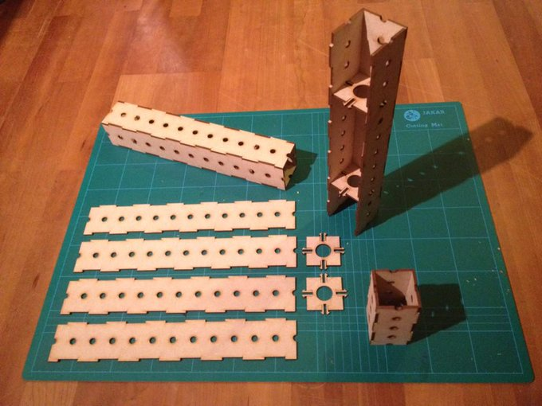
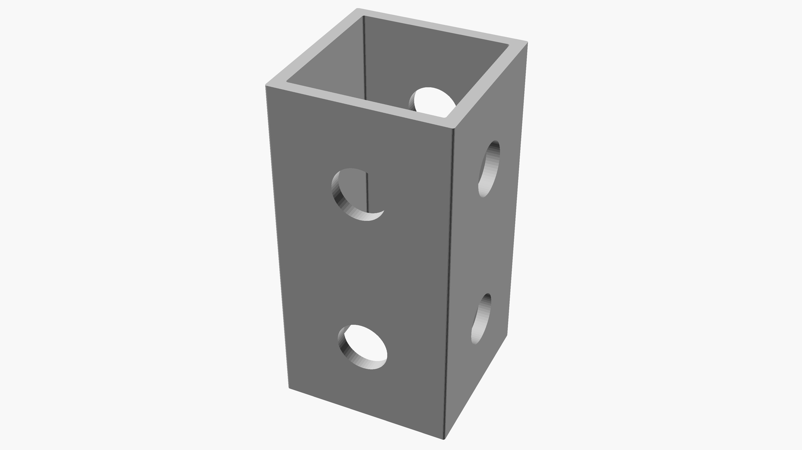
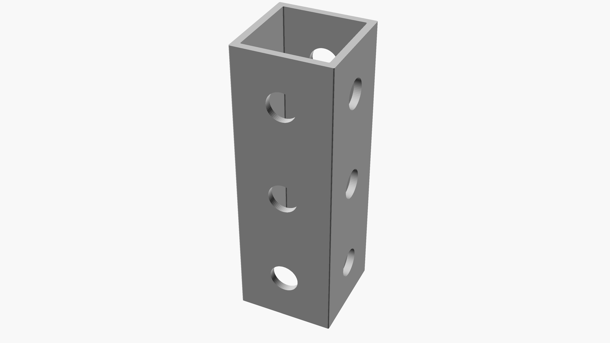
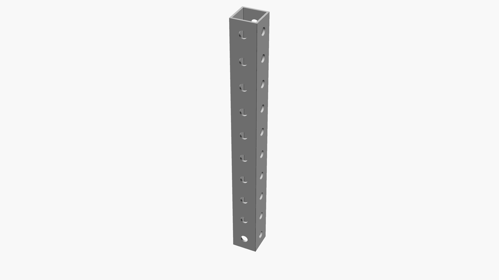
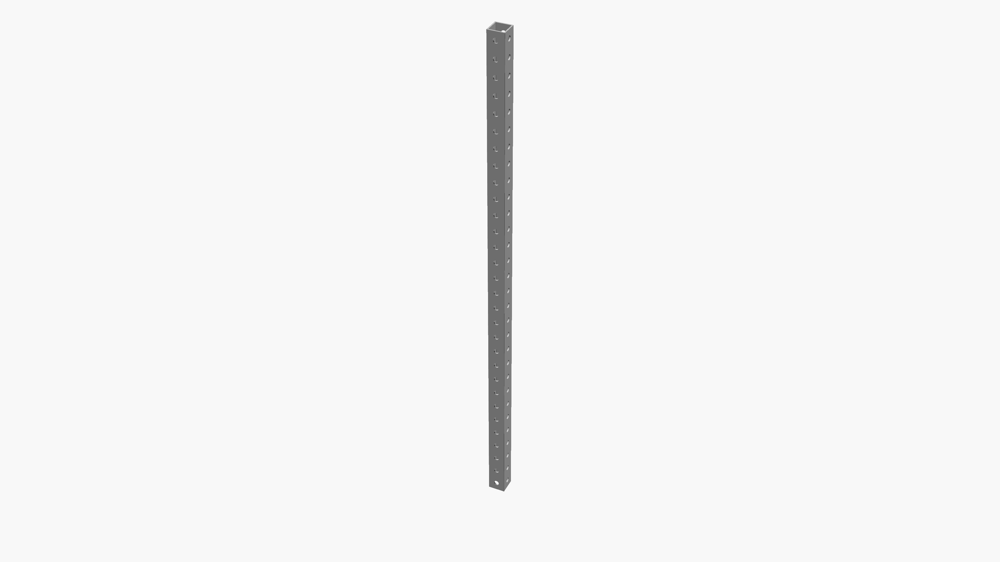

frames revision 9212
^ Parts infobox ^^
| image | Frame-5.png |
| designers | Phil Jergenson |
| date | 1987 |
| vitamins | |
| materials | [[woods|Woods]], [[aluminums|Aluminums]], [[steels|Steels]], [[plastics|Plastics]], [[fiber_reinforced_resins|Fiber reinforced resins]] |
| transformations | [[milling|Milling]], [[drilling|Drilling]], [[punching|Punching]], [[cutting|Cutting]] |
| lifecycles | |
| tools | [[drill_presses|Drill presses]], [[automated_drilling_machines|Automated drilling machines]], [[cnc_routers|CNC routers]], [[punch_presses|Punch presses]], [[sanding_blocks|Sanding blocks]] |
| parts | |
| techniques | [[bolting|Bolting]], [[tri_joints|Tri joints]], [[shelf_joints|Shelf joints]], [[count_by_fives|Count by fives]], [[divisible_by_two|Divisible by two]], [[center_holes|Center holes]] |
| files | |
| suppliers | |
| git | |
Introduction
The modular frames in this system are constructed using only one component, repeated and assembled in a variety of configurations attached using nuts, bolts, and washers. These frames assemble quickly, intuitively, and squarely in all dimensions and on uneven surfaces, under water, or in zero gravity. Frame members are easily manufactured from renewable and widely available raw materials such as trees, square steel, aluminum, and other metal tube, even bamboo and
recycled thermoplastics. Aluminum frame members retain perfect interchangeability and reusability after years of
intense sun exposure, submersion in water, etc. Wood frame members retain near-perfect interchangeability and reusability across lifetimes when stored in a home, or other controlled environment.
Challenges
Most projects require a physical structure. Sizes, shapes, and configurations vary widely. Welding requires special skills and equipment. Aluminum extrusion, widely used, can be frustrating to insert nuts into channels in already assembled frames, and the infinite adjustability of the extruded channel requires measurement tools at assembly time and great care and attention to detail.
<youtube>IcVu7G71N50</youtube>
<youtube>x30Sq6aq0wY</youtube>
Approaches
Construct projects using a standardized space frame kit optimized for local production. Unlike Isaacs or Jergensen frames, Replimat uses only lengths that are multiples of 5 segments: 200 mm or approximately 7.5 inches. Frames of two, three, and four segment lengths are included to allow for the construction of additional joints and assemblies.



Ian Willey" loading="lazy">Profile
Replimat frames are constructed using standard lengths of material with a square profile or cross-section. Frame sections may be solid or hollow, constructed from a single piece, laminated, or joined. All Replimat frame sections share the same 40mm width. Frames of larger or smaller widths may be produced, and work with all of the construction techniques found here. Frames of evenly divisible widths interoperate.
Spaceframes constructed similarly are possible using other profiles. Hexagonal profile frame may be capable of building sections of Weaire–Phelan structures.
Hole Pattern
Holes are centered on each face of the frame and spaced regularly in a repeating pattern at a distance equal to the width of the frame. This geometrical arrangement allows the frame members to reliably produce rigid joints in three dimensions.
Widths
Frames of larger cross section require fewer holes than frames of smaller cross section that are the same length. And fewer saw cuts when working from lumber or sheets. Counterintuitively, thicker frame is sometimes faster or less expensive to produce than thinner frame. Thicker frame also creates stronger tri joints and requires fewer nuts and bolts to create frames of equivalent size and strength as compared to frame of reduced width. Thinner frame can allow accurate and reproducible model building before final assembly at larger scale. Thinner frame also allows for a finer resolution in the hole pattern, easing complex mounting problems.
Lengths
Replimat uses frame lengths of 2, 3, 4, 5, 10, 15, 20, 25, and 30 holes per side. These lengths have been chosen to allow for the creation of all necessary joint configurations as well as to allow for lengths with a center hole and lengths which are evenly divisible by two. Reducing the set of lengths allows for improved reuse from project to project, easier identification in photographs and diagrams, and simpler production, handling, and shipping. Projects in this wiki make use of only these 9 lengths and rely on trusses, splicing frames, stacked washers, and adapter plates to reach arbitrary positions.
{| class="wikitable"
|+ Comparison of whole unit frame lengths - 200mm has been chosen as a base unit
|-
! 8mm width !! 20mm width !! 25.4mm width !! 38.1mm width !! 40mm width !! 50mm width !! 60mm width
|-
| 8mm || || || || || ||
|-
| 16mm || || || || || ||
|-
| 24mm || || 25.4mm || || || ||
|-
| 32mm || || || || || ||
|-
| 40mm || 40mm || || || 40mm || ||
|-
| 48mm || || 50.8mm || || || 50mm ||
|-
| 56mm || || || || || ||
|-
| 64mm || || || || || ||
|-
| 72mm || || || || || ||
|-
| 80mm || 80mm || 76.2mm || 76.2mm || 80mm || ||
|-
| 88mm || || || || || ||
|-
| 96mm || || || || || ||
|-
| 104mm || || 101.2mm || || || 100mm ||
|-
| 112mm || || || 114.3 || || ||
|-
| 120mm || 120mm || || || 120mm || || 120mm
|-
| 128mm || || 126.6mm || || || ||
|-
| 136mm || || || || || ||
|-
| 144mm || || || || || ||
|-
| 152mm || || 152.4mm || 152mm || || 150mm ||
|-
| 160mm || 160mm || || || 160mm || ||
|-
| 168mm || || || || || ||
|-
| 176mm || || 177.4mm || || || ||
|-
| 184mm || || || || || || 180mm
|-
| 192mm || || || 190.5 || || ||
|-
| 200mm || 200mm || 202.8mm || || 200mm || 200mm ||
|-
| 208mm || || || || || ||
|-
| 216mm || || || || || ||
|-
| 224mm || 220mm || 228.6 || 228.6 || || ||
|}

tri joints" loading="lazy">
clevis fasteners, smallest of the frames with center holes" loading="lazy"> count by fives which have center holes and can accommodate two tri joints each" loading="lazy">
count by fives which have center holes and can accommodate two tri joints each" loading="lazy">

center hole" loading="lazy">
center holes" loading="lazy">

Variations
In the imperial version, popular hole sizes are 21/64 inch and popular bolt sizes are 5/16 inch. For the metric frames, we can use a 6 mm bolt and 7-8 mm holes for the 25 mm frame; a 12 mm bolt and holes for the 40 mm frame and 13-14 mm holes for the 50 mm frame.
Materials
Wikibooks: robot building materials implies that cardboard (!) is best for quick prototypes; for functional robots, "wood is probably the best material to start with."; where wood isn't quite durable enough, aluminum is the best metal -- better than steel for most robots.
Steel / Aluminum
United states
*Any construction steel supplier.
- 8020 Inc Ready Tube
- McMaster-Carr Bolt-Together Framing
- Allied Tube Telespar and Quick-Punch
- Allied Tube Square-Fit
- S-Square Square Post Perforated
- Ultimate Highway Products Ulti-Mate steel highway sign posts
- Hemptraders
- Markstaar recycled plastic lumber
- TNutz
Canada
- Any construction steel supplier.
- Unistrut
- Makerparts.ca
- Spool3D.ca
- Misumi Canada
- CPI Automation
UK
*Any construction steel supplier. (Undrilled)
New Zealand
<sbailard_> VikOlliver, steel and aluminum box section down in NZ, is it metric, or '25.4 mm'?
<VikOlliver> Strangley it's in approx 25mm increments...
* sbailard_ is beside himself in surprise.
<VikOlliver> It's sold as 25x50mm box section but you know what they mean...
- https://www.ullrich-aluminium.co.nz/extrusions/square-tube
- https://www.easysteel.co.nz/products/hollow-sections
China
Wood
Michigan
Warning
In North America, wood which is called '1x1' or '2x2' is actually smaller than 1 inch or 2 inches in cross section. This is unfortunate but legal. Speak to a lumber yard or other supplier about getting 'wood which is actually sized 1 inch by 1 inch or 2 inches by 2 inches'. They will be able to help you, possibly by setting up a small order correctly sized material with a local mill, which may be a quick job. (If you are a woodworker, this paragraph is obvious, and we apologize. And you have a table saw.)
A common so-called "two-by-four" (38 mm x 89 mm, 1.5 inch x 3.5 inch)
can be ripped and planed into two separate grid beams (each 38 mm square).
Does it make any sense to do slightly less work, converting that so-called "2x4 board" into one beam that acts like those 2 grid beams permanently attached to each other, 38 mm x 76 (1.5" x 3.0") with a double row of holes on the 3.0" wide side?
*Nails - After checking carefully with a nail finder.
*Grit - Use a stiff plastic brush to clean off your wood. Stone pebbles will chip your saw blade.
Plastics
<youtube>zNGuuSKE1pY</youtube>
References
- Getting started with aluminum extrusions
- https://www.amazon.com/dp/B07P7BKXY7/ref=cm_sw_r_cp_apa_i_w83gFbG078T8M?tag=replimat-20
- A How-To in Homebrew Design, Fab, and Assembly With Extruded Profiles
- discussion of frame production techniques
- Grand unification theory of modular units
- Toja grid pergola system - 4x4 brackets are 14-gauge and 6x6 brackets are 12-gauge steel, 10 year powder coating, 5 year warranty.
- Interactive Design and Fabrication of Wood Joints
- HOLLOW STRUCTURAL SECTIONS Beam Load Tables
- Sacr3D Etching
<youtube>ozSE7Wrdb1o</youtube>